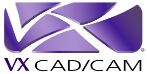
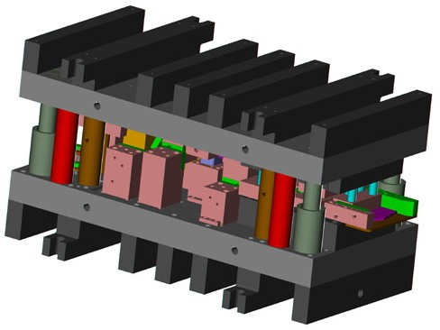
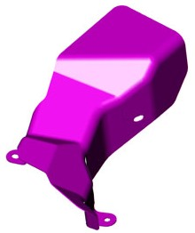
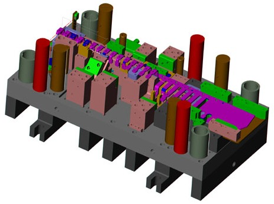
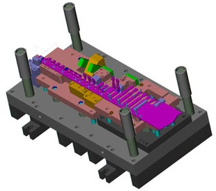
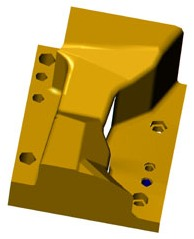
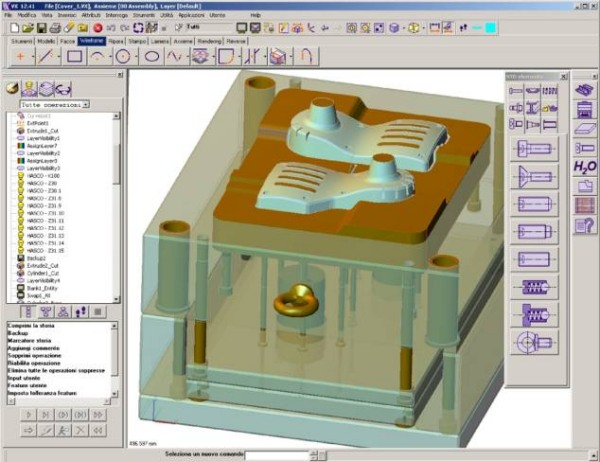
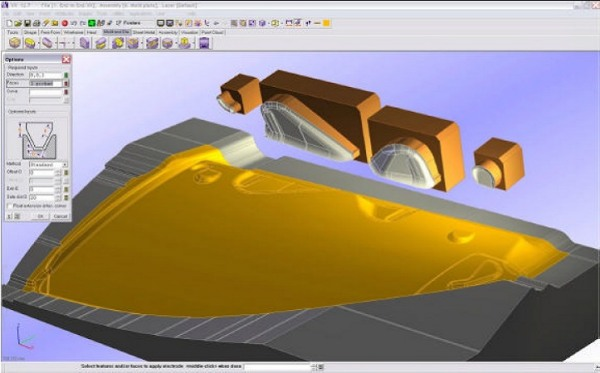

|

Pazardaki hýz otomotiv tedarikçileri için hayatidir:
Melbourne, Florida - 31 Ocak 2007 - Otomotiv sanayiine yönelik özel pres baskýlar, montajlar, yaylar ve maça formlu ürünlerin üretiminde lider olan Grand Rapids Spring & Stamping, Inc., otomotiv tedarik pazarýnýn gereksinimlerini hýzlý bir þekilde yerine getirebilmek için VX firmasýnýn entegre CAD/CAM yazýlýmýný kullanmaya baþlamýþtýr.
Otomotiv Pazarý için Daha Fazla Hýz:
Küresel rekabet, pazarda hýzlý hareket edebilmeyi, pazar payýnýn arttýrýlabilmesi için hayati bir noktaya yerleþtirmiþtir. Dünya otomotiv sanayii bunun en önemli örneðidir. Üreticilerin en yeni arabayý sunabilmek için yarýþmalarýyla birlikte, yeni bir modelin ortaya çýkma süresi gittikçe kýsaldý. Bu da, otomotiv parça tedarikçilerine daha fazla baský getirdi; bir aracýn resmi olarak piyasaya girmesi için henüz bir kaç yýl olsa bile, tedarik zincirinin saðlama alýnabilmesi için prototip ile ön-üretim parçalarýnýn çok uzun bir zaman önce elde edilmesi gerekmektedir. Öncü tedarikçiler, bu zaman sýnýrlarýný aþmak için, geliþmiþ üretim süreç ve teknolojileri aramaktadýrlar.
Grand Rapids, Michigan'da bulunan ve otomotiv sanayii üzerine odaklanan Grand Rapids Spring & Stamping, Inc. (GRS&S), özel pres baskýlar, montajlar, yaylar ve maça formlu ürünlerin üretiminde sanayi lideri konumundadýr. ABD ve Meksika'daki altý fabrikasýnda, GRS&S, karoser ve taþýyýcý gövde mekanizmasý gibi araç parçalarýný þekillendiren hassas kalýplar üretmektedir. Pres hanelerinde de, 1800mm x 4250 mm geniþliðinde yatak ölçüsü ve 500 ton kapasitesine kadar otomotik presleme yapabilmekte ve 6mm kalýnlýk - 1200mm geniþliðine kadar saç parça iþleyebilmektedir.
Firmanýn kapasitesi ile kalite anlayýþýndaki ünü kendisine eþsiz bir rekabet gücü saðlamaktadýr. Örneðin, GRS&S, 2006 yýlýnda, Nissan U.S.A'nýn Kuzey Amerika montaj fabrikasýnda kullanýlmak üzere daha önce Birleþik Devletlerde üretilmemiþ karmaþýk ve büyük bir kalýbý ürettiði için birkaç nitelikli firma arasýnda seçilmiþtir.

Otomotiv parçasý tedarikinde kalite, hacim, maliyet ve zaman unsurlarýný yerine getirebilmek için GRS&S farklý yeni üretim süreci uygulamaktadýr. Örneðin, firma, kendi "Akýllý Araç" sistemini geliþtirmiþ ve patentini almýþtýr. Bu sistem, optik sensörlerle kontrol edilerek kalýp diþi veya erkeklerinin (tüm kalýp parçalarýnýn) aþýnmasý sebebiyle baský yapýlmýþ parçalarda oluþabilecek tüm sapmalarý önleyebilecek þekilde ayarlanmasýna imkân saðlamaktadýr.
Tasarým müdürü Chris Bloss'a göre, otomotiv parçalarý tedarikinde kalite ve maliyet baskýsýnýn yaný sýra "zamanlama da büyük öneme sahiptir". Tipik bir teslimat süresi ortalama sadece sekiz haftadýr ve yeni bir parça için, bu süre tasarým, üretim ve deneme safhalarýný kapsamaktadýr. Verimlilik ve üretim miktarýný arttýrtmak için, GRS&S sürekli olarak tasarým, iletiþim teknolojileri ile üretim süreçlerinde ince ayarlamalar yapmaktadýr. Bu gayretlerin anahtar unsuru firmanýn daha önce kullandýðý yetersiz CAD ve CAM yazýlým paketlerini kullanmayý býrakýp VX firmasýnýn bütünleþmiþ CAD/CAM yazýlýmýný uygulamaya baþlamasý olmuþtur. VX CAD/CAM paketi, 3D katý/yüzey hybrid modelleme, parametrik tasarým yapabilen ve 2 eksenden 5 eksene frezeleme içeren bütünleþmiþ bir CAM paketine sahiptir.
VX CAD/CAM yazýlýmý, tasarýmdan üretime kadar süreklilik ortaya koyar. GRS&S'de, müþterinin CAD parçasý IGES formatýnda gelir. Bu dosya, VX'in geliþmiþ iyileþtirme - healing modülü ile kayýpsýz ve sorunsuz bir þekilde VX ortamýnda kullanýlmaya hazýrlanýr. Bloss, "Eðer modeli oluþturan yazýlýmý kullanmýyorsanýz ki bu her zaman imkânsýzdýr, çünkü birçok müþteri ile çalýþýrsýnýz ve her biri ayrý yazýlým kullanabilir. Modeli kullandýðýnýz yazýlýma dönüþtürmeniz gerecektir ve bazý CAD verilerinin bozulma þansý her zaman mevcuttur. VX iyileþtirme - healing modülü CAD modeldeki tüm sorunlarýn üstesinden gelebilecek araçlara sahiptir. Sorunsuz CAD modeli elde edebilmek için, biz, sorunlu yüzeyleri yeniden oluþtur veya yýrtýk - açýk olan kenarlarýn düzenlenmesi araçlarýný kullanýyoruz. Model ne kadar temiz olursa, süreçte o kadar iyi ilerler. Yazýlýmýn hybrid modelleme özelliði yüzeylerin temizlenmesi için bir hayli kullanýþlýdýr ve tamamen farklý birkaç katý dosyayý ayný anda kullanabilmesi tasarým hýzýný artýrmaktadýr."

Müþteriden modeli aldýðýmýzda, parçalar araçtaki görevlerine göre oluþturulmuþtur ve araçta durduðu pozisyonda bize gelir. Modeli yeniden konumlandýrýyoruz ve ardýndan kalýp üretimi için tasarýma baþlýyoruz. Kalýp tasarýmý deneyim üzerine kuruludur; Bloss, "bazen, bir parçayý oluþtururken en iyi sistemi - süreci bulmak için, bu parça ister tek vuruþta oluþsun isterse progressive kalýp ile oluþsun, simülasyon yazýlýmý kullanýrýz." demiþtir.
Tipik bir GRS&S kalýbý 150-200 tane farklý 3D katý CAD parçasýndan oluþmaktadýr. Her bir parça VX'e bir katý olarak alýnýr ve ardýndan, sanal olarak birleþtirilir - montaj edilir. Her bir parçayý ayrý ayrý veya bir bütün olarak görebiliriz.
Bloss, VX kullanmadan önce, "%100 katý araç kullanmýyorduk. Þimdi ise, sadece tasarým aþamasýnda deðil tüm üretim süreci boyunca kullanmaktayýz. Ýþlerin daha düzgün gitmesini saðlýyor" demiþtir. Katý modellerin kullanýlmasýnýn tasarým ve üretim personelleri arasýndaki iletiþimi kolaylaþtýrdýðýna dikkat çekmiþtir çünkü "neredeyse bitmiþ bir katý vardýr. 2-D rendering iþlemleri ile, birçok þey tasarýmcýnýn hayal gücüne ve bu bloðu bir kaç görüþ açýsý ile etkileþime sokma yeteneðine kalmaktaydý. Bir katý ile herkes bu bloðun içine girip onu 180 derece döndürerek her bir görüþ açýsýný elde edebilir." %100 katý kullanýmýnýn 2-D rendering den çok daha fazla bellek gerektirir ve elde edilen dosya boyutlarý bir hayli büyüktür; bitirilmiþ tipik bir kalýp modeli 200MB olabilir. Ýþlem hýzý büyük belge boyutundan dolayý etkilenmez, çünkü, VX tüm kalýp parçalarýnýn detayýný belleðe yüklemez, sadece görüntüsünü alýr. Üzerinde çalýþtýðýmýz parçanýn detaylarýný belleðe alýr, sadece bu parça açýkmýþ gibi çalýþýr ve diðer her þey arka plandadýr. Böylece, düzenlenmeyen parçalar bellek kullanmaz.
3-D katý tasarým hazýrlamanýn 2-D tasarýma göre daha uzun sürdüðü zannedilse de, esasýnda uzun vadede zamandan tasarruf ediyorsunuz çünkü daha fazla bilgi giriyorsunuz ve modeli yorumlamak için daha az zaman ve insan gerekiyor. Tasarým için harcadýðýnýz her bir saat için, süreç sonunda iki saat kazanýyorsunuz. Bir aracýn tasarýmý ilerledikçe, kalýplar güncelleme ve deðiþiklikler gerektirir. Bunlar mühendislik deðiþiklikleri olarak adlandýrýlýr, sýk sýk gerçekleþirler... Bu bir þekilde sürekli bir mücadeledir! Yazýlým, aracýn deðiþen parçalarýný güncellemeyi kolaylaþtýrmaktadýr. Bloss: "VX'in parametrik yapýsý bize çok yardýmcý olmuþtur çünkü ölçüleri, þekilleri istediðimiz ve gerektiði gibi deðiþtirebiliyoruz" demiþtir, "Deðiþkenleri kullanarak bir sürü parametrik iliþki ve formülizasyon kurdum, böylece biz sadece bir deðiþkene týklýyoruz ve VX modeli veya kalýbý yeniden çiziyor. Süreç dramatik bir þekilde kýsalýyor. Ve mümkün olduðu kadar, daha önceden çizilmiþ kütüphanedeki parçalarý kullanýyor ve onarlý iliþkilendiriyoruz, dolayýsýyla her þeyi çizmeyerek de zamandan tasarruf ediyoruz." Bloss, GRS&S'nin önceden kullandýðý CAD yazýlýmýyla gerçekleþtirilen tasarýmlardan oluþan kütüphanenin IGES gibi çeviricilerle kolayca VX'e aktarýldýðýný da ifade etmiþtir.
Firmada þu an altýsý tasarým ikisi üretim bölümünde olmak üzere sekiz VX lisansý bulunmaktadýr. Yazýlýmýn tasarýmdan üretime tüm konularda çalýþmasý iletiþimi hýzlandýrmaktadýr.
GRS&S, sürekli olarak otomotiv sanayisinde rekabet edebilirliðini geliþtirebilmenin ve müþterilerini memnun edebilmenin yollarýný aramaktadýr. Chris Bloss'a göre, geliþmiþ üretim tekniklerini uygulamanýn yaný sýra, bu iyileþtirme "temelde bir iletiþim sürecidir". VX yazýlýmý kapasitesi, gücü düzgün ve hýzlý iletiþime yardýmcý olmakta ve dolayýsýyla Grand Rapids Spring & Stamping firmasýna daha keskin bir rekabet gücü saðlamaktadýr.

VX 12 de Kalýp Tasarýmcýlarý için Daha Ýyi Araçlar
VX 12, bütün standart kalýp parçalarýný ve soðutma kanallarýný içeren tasarým-odaklý, akýllý ve parametrik bir kalýp kütüphanesi sunmaktadýr. Kütüphane, kalýp tasarýmcýlarý tarafýndan kalýp tasarýmcýlarý için sezgisel tasarlanmýþ bir ara yüze sahiptir. Ayrýca, elektrotlarýn 3D tanýmlamasý ve 2D tasarýmýný kolaylaþtýran yeni bir elektrot tasarým sihirbazý da mevcuttur. Diðer geliþtirmeler ise, auto-zoom özelliði ile kalýp ayýrým çizgilerindeki kopukluklarý ve teðetlikleri kontrol edebilirsiniz. 3B kalýp ayrým çizgilerinin düzenlenmesinde 2B tel kafes komutlarýný kullanabilirsiniz.

VX Corp. Hakkýnda (www.vx.com):
VX Corporation, endüstriyel tasarýmcýlar, mühendisler ve CNC programcýlarý için öncü bir CAD/CAM çözüm geliþtiricisidir. VX, tam bütünleþik hýzlý tasarým ve gerçek hassas üretim sunmaktadýr. Hybrid modelleme motorunu kullanarak, mühendisler katý modellemenin hýzýndan ve Class A yüzey modellemenin esnekliðinden faydalanabilirler. Tasarýmcýlar, model, montaj, ürün tasarýmý ve kalýp tasarýmýný oluþturabilir, deðiþtirebilir, görselleþtirebilir, belgelendirebilir ve üretebilir. VX; giriþ seviyesindeki VX Modeller modülünden, VX End-to-end modülüne kadar, güç, performans ve verimlilik saðlamaktadýr.
Ýrtibat:
Yenasoft Yazýlým Donaným ve Danýþmanlýk Ltd. Þti.
Eski Üsküdar Yolu Cad. Bodur Ýþ Merkezi No:8 Kat:3 D:12
Ýstanbul
Tel: (216) 569 74 63
www.yenasoft.com
|